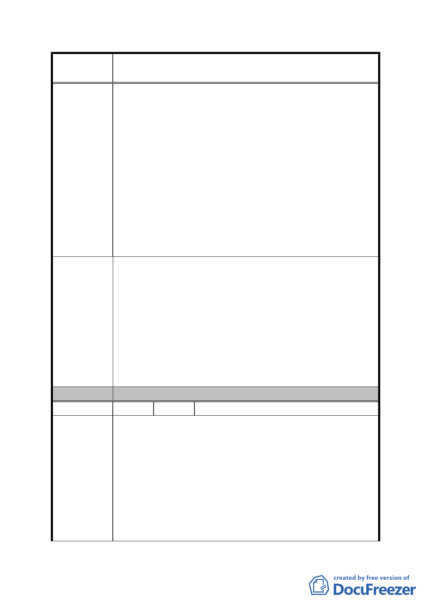

案
名
修訂臺北市「基隆河（中山橋至成美橋段）附近地區土地使
用分區與都市設計管制要點」（北段地區）計畫案
為該區域之觀光旅館用地，如果四周高樓林立，不僅失
去當初「為塑造本 地區整體特殊建築風格及地區優美天
際線」之美意，且嚴重違反都市計畫及建築設計之景觀。
2、陳情人投入大量資金擬開發興建觀光旅館，絕對高度及
地標性，為評估投資之重要因素，今若無限制放寬，將
嚴重影響C2土地之權益，陳情人因信賴都市計畫法規之
利益，將受到嚴重損害。
( 三 ) 不當限制建築物立面寬度
台北市政府為了放寬 A1、A2、Bl 及 B2 四街廓之建築物高度，
卻限制 C2 基地建築物立面寬度不得大於長度之二分之一，
增加設計之困難度，嚴重影響陳情人之權益，陳情人未享有
放寬建築物高度限制之利益，卻須在建築物立面寬度受到同
樣之限制，無法接受台北市政府之建議方案。
綜上所陳；宜華國際股份有限公司主要股東為西華大飯店，
在國內都有經營觀光旅館達 20 年之豐富經驗，此次為了配
合政府發展國內觀光產業，並信賴既有都市計畫法規，而投
入巨額資金，開發大彎北段地區 C2 土地，成為該區地標性
建議辦法
建築物，如今台北市政府擬全面放寬該區作住宅 使用之限
制（除 Cl 及 C2 外），又對 A1、A2、Bl 及 B2 四街廓，放寬
建築物高度之限制，卻又無端限制陳情人所有 C2 基地建築
物之立面寬度，已違反都市計畫法規，且嚴重打擊觀光產
業，為此；請貴會審慎參酌陳情人之意見，以維百姓權益，
而符法治。
委 員 會 決 議 同編號 1。
編 號 26 陳情人 李得榮等 58 人
一、土地及建築物之使用：
1. 都發局 98 年 5 月修正方案中，其作原計畫允許使用之面
積反而超過原計畫案，舉例如下：
【40%（最小建蔽率）×3（層）＝120%】＞【200%（供
陳 情 理 由 一般商業使用之商業區容積率）×1/2＝100%】，顯未放寬
指定使用項目，反見緊縮嚴格。
2. 為反映當地中小規模店面營業行為實難超過 2 樓以上，
並因應允建高度放寬後之合理店面佔總容積之比例，故
建議將其作原計畫允許使用之低層部使用樓地板面積，
- 78 -